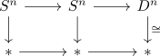
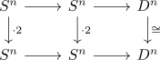

cellular approximation of an equivalence is in general not an equivalence
Proposition
Let $f: X \rightarrow Y$ be a equivalence between anima. Let $\mathrm{Sk}_n(X), \mathrm{Sk}_n(Y)$ be cw structures, then the cellular approximation $\mathrm{Sk}_n(f): \mathrm{Sk}_n(X) \rightarrow \mathrm{Sk}_n(Y)$ is in general not an equivalence
Proof
a)
see e.g.

b)
see e.g.

where $D^n \simeq *$ are of course equivalent
Here $S^n \xrightarrow{\cdot 2} S^n$ is not an equivalence.